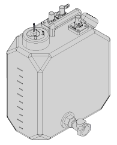
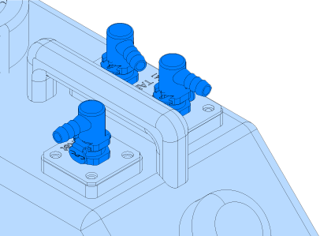
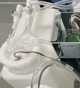
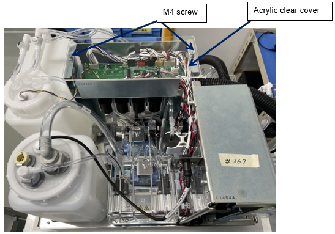
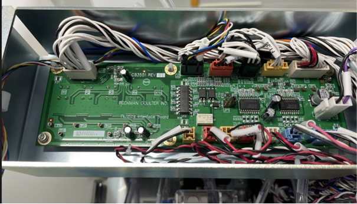
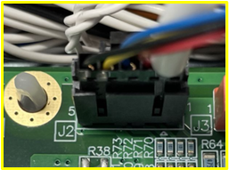
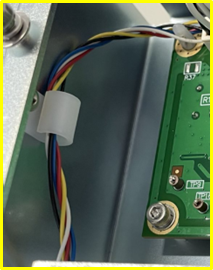
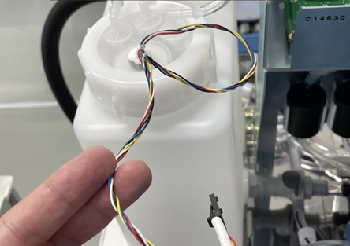
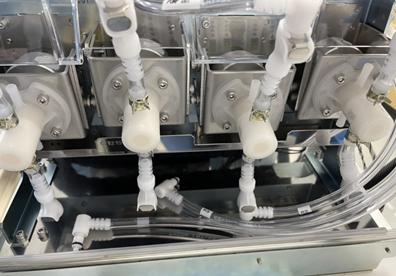

This topic includes information about how to replace the wash buffer reservoir.
Safety Reminder
Servicing the DxI 9000 instrument involves potential risks for pinch and puncture, electrical shock, and exposure to hazardous materials. You must mitigate these risks by taking appropriate countermeasures. See
Safety for more information.
One large gray quick connect on the lower right side.
Four quick connects
ON the reservoir that attach to the Hi-Cera pumps. Remove quick connects at the reservoir.
Note the location of quick connects. There are three on top and four on the lower right side.

Seven quick connects total.
Three quick connects on the cap.
One large gray quick connect lower on the right side.
NO quick connects on the reservoir that attach to the Hi-Cera pumps. Remove quick connects at the Hi-Cera pumps.
Note the location of the quick connects. There are three on the cap and none on the lower right side. The tubing will stay on the four fittings located on the lower right side. The reservoir will get disconnected at the Hi-Cera pumps.
Open the lower right cabinet to the fluidics drawer.
Extend the fluidics tray.
Remove the waste reservoir.
Disconnect the quick connects on the waste reservoir.
Detach the liquid waste sensor cable at the metal base to the right of waste reservoir or reservoir.
Place the waste reservoir to the side of the instrument.
Return to the fluidics drawer and disconnect the three quick connects at the top of the wash buffer reservoir.
Figure 198: Old style quick connects

Figure 199: New style quick connects

Note: Keep the removed tubes together so that they do not touch the floor or sheet metal.
Loosen the two screws above the fluidics printed circuit board (PCB) and remove the acrylic cover.
The following image shows the fluidics PCB with the acrylic cover.
Figure 200: DxI 9000 Fluidics PCB Cover

The following image shows the Fluidics PCB without the acrylic cover.
Figure 201: DxI 9000 Fluidics PCB

Disconnect the float switch from the J2 connector and release the cables from the J-clip.
The following image shows the J2 connector that needs to be disconnected.
Figure 202: DxI 9000 Fluidics PCB J2 Connector

The following images shows the cables that need to be released from the J-clip.
Figure 203: J-clip

Put the acrylic cover on the PCB to protect the board from any potential splashing.
Take off the float switch cable from the sheet metal box.
Figure 204: DxI 9000 Float Switch Cable

Remove the float switch and cap assembly from the existing wash buffer reservoir for reuse.
Figure 205: DxI 9000 Wash Buffer reservoir Cap Assembly
Old style reservoir: Unscrew the float switch from the wash buffer reservoir cap and put it to the side for reuse.
New style reservoir: Unscrew the outer cap, pull out the inner/outer cap (float switch, tubing, and fittings) from the wash buffer reservoir, and put them to the side for reuse.
Note: Handle the float switch and cap assembly with care. Cover or wrap them with clean cloth to avoid wash buffer contamination.
Disconnect the four quick connects that attach the wash buffer reservoir to the Hi-Cera pumps. Refer to table above.
The following image illustrates the quick connects at the Hi-Cera pumps.
Figure 206: Quick Connects at Hi-Cera Pumps

Release the Hi-cera tubes from the J-clip placed at the back side of the fluidics drawer.